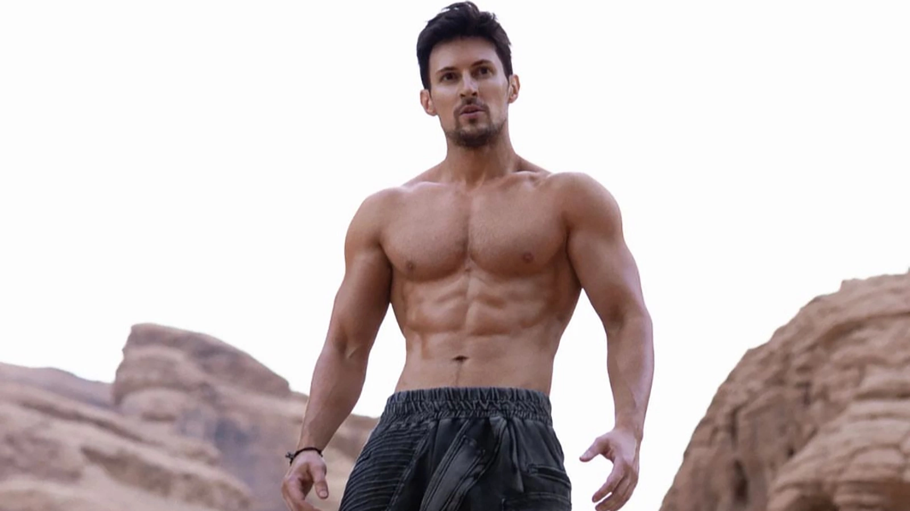

Telegram — самое популярное приложение для обмена мгновенными сообщениями в некоторых странах Европы, Азии и Африки. По словам Павла Дурова, на начало 2023 года Telegram стал вторым после WhatsApp мессенджером в мире по популярности. По состоянию на 19 марта 2025 года Telegram насчитывает более 1 миллиарда ежемесячных активных пользователей, по количеству пользователей лидирует Индия. Серверы Telegram расположены по всему миру в нескольких дата-центрах, а штаб-квартира находится в Дубае, Объединённые Арабские Эмираты.
Павел Дуров, активно выступающий за свободу интернета, утверждает, что Telegram имеет высокую степень конфиденциальности данных.
По оценкам СМИ, такая политика конфиденциальности привлекла в Telegram террористов, экстремистов, мошенников, торговцев оружием и наркотиками.
По данным Surfshark, всего Telegram временно или бессрочно блокировали в 31 стране.
Расследование, связанное с организованной преступностью в Telegram стало причиной уголовного преследования Павла Дурова во Франции в 2024 году.
